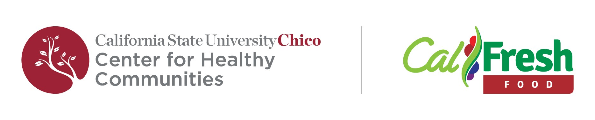

The CFO Office Sign-in Dashboard App


Juan’s 2024 DS Capstone
The CFO Office Sign-in Dashboard App
This project is a web application developed using Shiny, an R package for building interactive web applications, enabling dynamic data presentation and user interaction.
My capstone project centered around streamlining common data analysis processes for Chico State’s Student Services Center (SSC) CalFresh Outreach (CFO) office - a federally funded program (formerly known as food stamps) that helps students buy groceries. At Chico State, CalFresh Outreach assists students in checking eligibility, applying, and maintaining benefits.
Goal
The CFO Office Sign-in Sheet recorded information about walk-in student visits to Chico State’s Student Services Center (SSC) CalFresh Outreach (CFO) office.
The goal was to create a Dynamic Report using the Shiny app, data analyses, and final reports to keep track of visits to the office. These includes:
- Daily visits
- Weekly visits
- Monthly visits
- Visits by Term
- Types of Assistance
- Repeated Assistance
- How they heard about CalFresh
Interactive Dashboard
Impact
Platforms used
- R Studio: Used for coding, data analysis, and visualization.
- Shiny: R package for building interactive web applications, enabling dynamic data presentation and user interaction.
- Google Sheets: A cloud-based spreadsheet tool for real-time data collection, storage, and collaborative work.
- Box: A cloud storage platform used for file sharing and collaborative document management.
- GitHub: Version control and code collaboration platform for managing code and tracking changes.
Variables
To create a Dynamic Report using the Shiny app, data analyses, and final reports to keep track of visits to the office. This includes:
- Daily, weekly, & monthly visits
- Visits by Term
- Types of Assistance
- Repeated Assistance
- How they heard about CalFresh
Data Collection & Wrangling
Data was collected through a Google Form, which gathers:
- History of visits
- Source of awareness about the SSC CFO office
- Type of services sought
- Name of the assistor

Juan is from the Central Coast of California. He graduated from CSU Chico with a BS in Mathematics (Statistics). He initially joined the DAFANH team as a Research and Evaluation intern and later transitioned to a staff role as a Program Assistant and Peer Mentor for the DAFANH 2024 Cohort. Juan enjoys the art of statistics, particularly in applying analytical skills to real-world problems. Outside of his academic and professional pursuits, he enjoys reading, playing the guitar, and weightlifting.